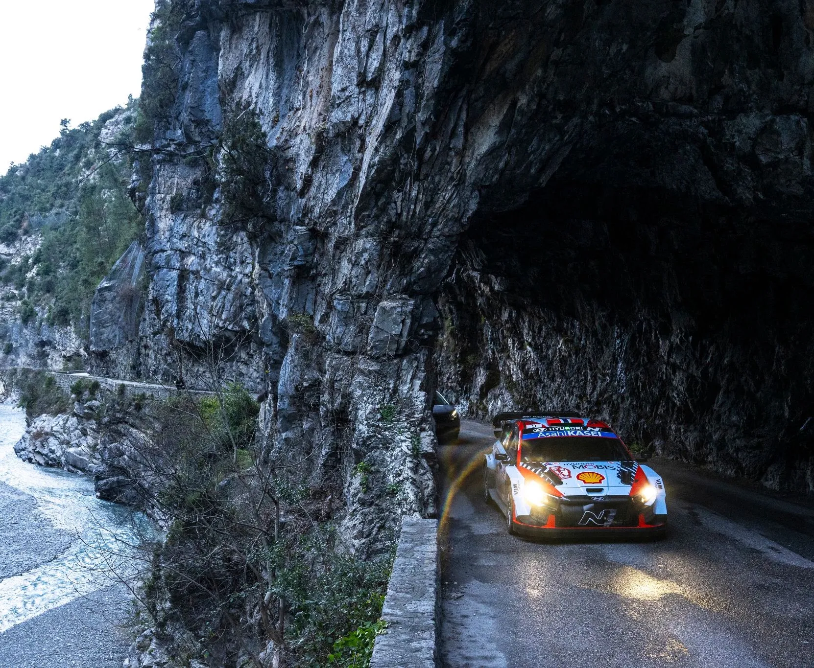
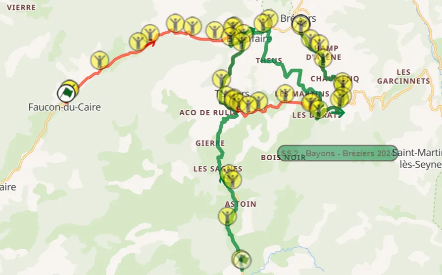
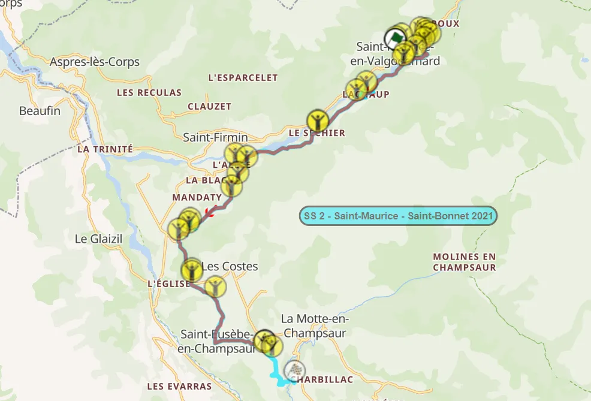
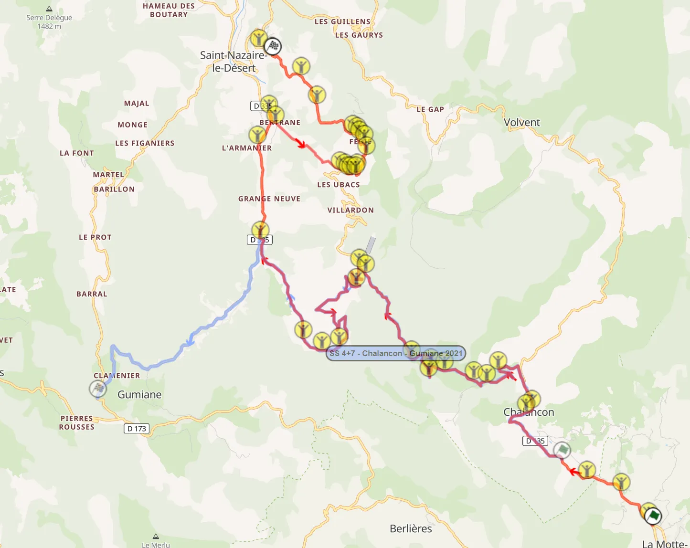
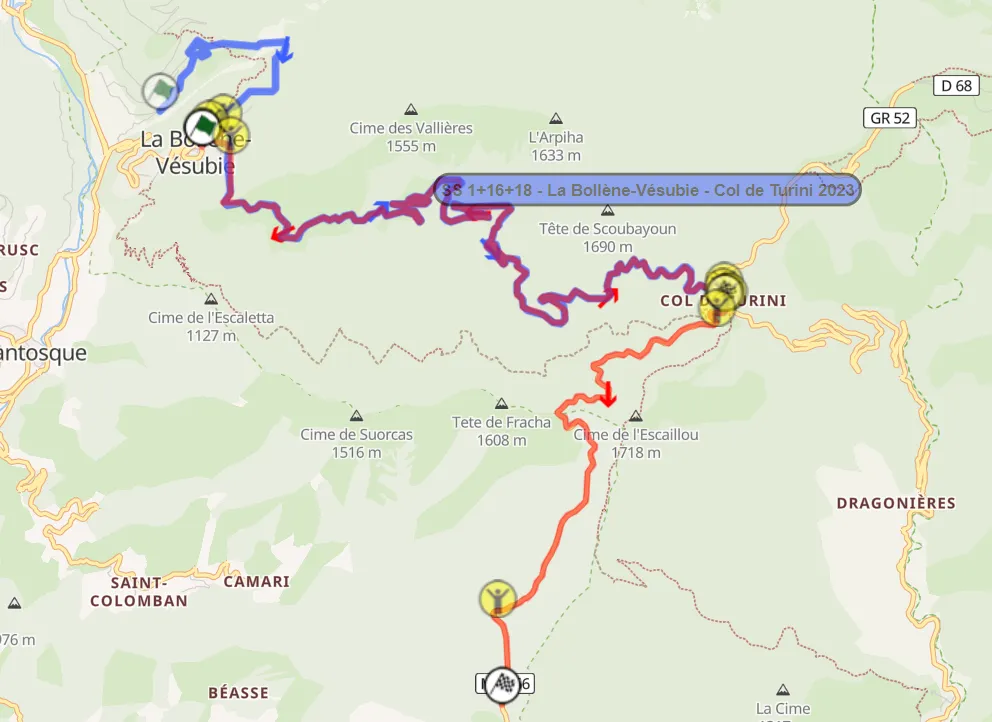

Rallye Monte-Carlo 2025 Route Preview
The 93rd edition of the Monte-Carlo acts as the curtain raiser for the 2025 WRC season. Just like last year, the event will be based in Gap, in the Hautes-Alpes region of France. This year's rally features significant changes compared to 2024, with the event being longer and featuring returning and brand new stages.
Wednesday
Wednesday only features the pre event Shakedown in Gap, which is unchanged from last year. It's not a very representative Shakedown, with the stage taking place in a narrow, fast road. The road tends to get very dirty after the first few cars.
Onboard of the Shakedown stage from last year
Thursday
Unlike all recent editions, Thursday features 3 night stages instead of two. After the ceremonial start in the Casino Square in Monte-Carlo, the crews will head to Digne-les-Bains for a tyre fitting zone before tackling the day's stages.
SS1/17 Digne-les-Bains - Chaudon-Norante is the opening stage of the rally, and it's identical to the one used in 2024. The first 10.5km are on a fast and wide road, interrupted by a series of hairpins at 4.3km.
The stage continues to be fast, until the 10.5km mark, after which it becomes more technical with a series of uphill hairpins. After those hairpins, the road becomes a bit narrower and more medium speed rather than fast. At 12km the stage turns downhill.
It becomes a lot more twistier and technical until about the 18km mark, after which it again changes to the same character as it had at the start, i.e. fast and relatively wide on a smooth surface.
Video from last year's stage, at around 15.5km from the start, in Col du Corobin
SS2 Faucon-du-Caire - Bréziers uses parts of the Bayons - Bréziers stage from last year, but not the “Les Tourniquets” section.
The stage also uses parts of the Turriers stage, that haven’t been used in the WRC since 2001, and never in this direction. It is also one of the two stages in this edition of the rally that are ran only once.

The map of the Faucon-du-Caire - Bréziers stage (red), compared to last year's Bayons - Bréziers (green)
The first 5.6km of this stage have never been used before. They are on an open road that's relatively fast, with the exception of a one kilometer section in a forested area at around the first 2.2km, where the stage becomes twisty.
After that, the section rejoins the Bayons - Bréziers route, only in reverse. That section is relatively fast throughout. The stage continues straight to the Tourriers section, where it becomes ever so slightly more technical. It passes through three narrow bridges at 13, 13.7 and 15km.
The end of the stage is identical to the one from last year’s Monte-Carlo. After a pass through a village, the crews will have to navigate themselves through a very technical downhill section, before the stage again becomes fast, until the finish.
Onboard video for SS2. It includes the brand new start and reversed sections
SS3/16 Avançon - Notre-Dame-du-Laus is the last stage of the day.
The stage of the same name was last used in 2020, but with a different start, 3km after the one of the 2020 edition. The stage starts off in an open and fast road for the first two and a half kilometres, at which it passes through the village of Les Guerins, and the road becomes a lot more narrow and technical briefly.
The road remains narrow and technical, but medium speed, for about 5 kilometers, after which it becomes a lot slower and sinuous, with a series of low-speed corners and hairpins. About 10 kilometers in, the road becomes faster, but still narrow, with some crests also.
After that, the stage again becomes slow and very tricky, with a series of tight downhill hairpins. This is followed by another technical section before the village of Notre-Dame du Laus, after which the road gets wider, just before the finish.
Video from the stage from 2020
Friday
Friday consists of 3 repeated stages to the east of Gap, two of which are the same as in 2024.
SS4/7 Saint-Maurice - Aubessagne is the first stage of the day, last ran in 2021 in a slightly longer configuration.

The map of SS4/7 (red), compared to the Saint-Maurice - Saint-Bonnet stage from 2021 (light blue)
The start of the stage is on a wide road, with mostly medium speed corners. After that, the route passes through a bridge, and turns to a narrower, more technical road, with the stage passing through a village.
After that detour, the stage again becomes wide, not as wide as in the beginning though, and a lot faster, interrupted by a village crossing at 6km.
At 9km, the route passes through another village, and becomes medium-fast for about 2km, after which the stage has a tricky fast downhill section.
At 13.3km, the stage turns to a wider road momentarily, in a flat out sequence of corners, before crossing to a narrower road, for a technical downhill section.
As the stage goes through the Baeaupaire village, there are two tricky crests. The last section of the stage is medium to high speed, in a slightly bumpy road, with the crews passing through two villages before the finish.
Video from the stage from 2021
SS5/8 Saint-Léger-les-Mélèzes - La Bâtie-Neuve is the same as the 2024 stage, the second pass of which was the fastest stage of the rally.
The stage starts off with a donut at the Saint-Léger-les-Mélèzes square. The first 4.5km are on a wide, smooth tarmac road, with the majority of it being flat out. After the village of Ancelle, the road becomes narrower and more technical, with a series of hairpins and slow corners, as the stage climbs up the mountain.
Last year we saw ice in this section, which caught out many drivers, like Ott Tanak, Gregoire Munster, Takamoto Katsuta and Andreas Mikkelsen, as well as WRC2 drivers like Bryan Bouffier and Chris Ingram.
Video from the icy section in 2024
After this, the stage continues on to an open plateau for a fast section, before it becomes narrower and bumpier, with the road now going downhill, amongst the trees. The stage retains the same character until the 13km mark, where the stage leaves the forest, and becomes more open and wide. The stage ends with a series of hairpins near the town of Les Borels.
SS6/9 La Bréole - Selonnet is again the same stage as last year, only run two times instead of three.
The first part of the stage is on a fast, narrow and bumpy road, in a forest. The stage leaves the forest momentarily, before rejoining it at the 3.4km mark. The stage then becomes more technical, but still fast for the next 6 kilometers, with the road also becoming relatively smoother from 6km onwards. After a flat-out section, the stage arrives at a junction that’s been turned into a chicane, and turns into a new road.
The junction/chicane from La Bréole - Selonnet
This new road is wider and more flowing, with the stage running alongside older stone walls in parts. The stage turns off this road at 13.2km, with the new one having a similar character to the one from the start, being bumpy and narrow, but fast. This is where the 0 car went off last year. Last year we saw an icy section at 16.7km.
The stage remains the same after that, finishing near the town of Selonnet.
Action from SS5/8 and SS6/9
Saturday
Saturday is the longest day of the rally, with 131 competitive kilometers. All three of the day's stages did not feature in last year's itinerary.
SS10/13 La Motte-Chalancon / Saint-Nazaire-le-Désert is the day's opening test, parts of it being last used in 2021.

The map of SS10/13 (red), compared to the Chalancon - Gumiane stage from 2021 (blue)
It starts off on a broken, medium wide tarmac road. At 4.9km, there's a jump, which leads the stage onto a narrower and sinuous section. The stage becomes a bit faster while still being narrow and technical for about 2km, as the cars climb uphill.
The jump, 4km into the stage
At 11km, the stage becomes downhill, with a series of hairpins. It continues to be narrow and technical, including a section of consecutive tight corners with stone bridges, until 16.1km, after which the stage becomes more medium speed.
At 20.86km, there's an acute hairpin which leads the stage into another, very narrow road.
The acute hairpin that leads to the final section of the stage
After a fast section, the stage becomes more technical, with the finish of the test being on a narrow section with broken tarmac.
SS11/14 - Aucelon - Recoubeau-Jansac is a brand new stage, that's never been used in Rally Monte-Carlo before. Parts of it have been used in the Historic version of the rally in recent years.
The stage is on a narrow road for it's entirety. The first few kilometers are uphill, passing next to the village of Aucelon.
The section from 6.2km to 7.2km is on a phenomenal piece of road, with the stage passing next to a ravine, with the mountainside being on the other side.
It's reminiscent of the Aiglun section last featured in the Monte in 2006!
The stage then turns to a road leading to Col de Pennes via this hairpin.
After the Col, there's a fast, downhill section, still on a narrow road, that's about 2.4km long.
After that, the stage becomes more technical, with another spectacular sequence coming at 17.2km in, where the road becomes twisty and flowing.
The stage then passes next to the village of Jansac, after which the road becomes more medium speed, and remains the same until the finish of the stage.
SS12/15 La Bâtie-des-Fonts / Aspremont has only been used once in this direction, back in 2019. This is essentially the Aspremont - La Bâtie-des-Fonts stage used in the 2021 edition of the rally, only in reverse. In 2021, Sebastien Ogier got a puncture and spun from the lead, and Kalle Rovanpera also spun on the second pass. The stage is on a narrow and bumpy road from start to finish.
The start of the stage is fast, with some hairpins and slow corners. The section from 8km to roughly 8.7km is noteworthy, with the stage passing next to a gorge, with the road having a cliff face on one side, and a stone wall on the other. After that, the stage passes through a village, with the next section being flat out on an open valley.
The stage continues to be fast, turning away from the route of the 2019 stage 4km from the end. The following section hasn’t been used in this direction before. The stage retains the same characteristics until the finish.
Onboard of the first 13km of the stage
Sunday
The final day of the event is also the shortest, as the crews make their way from the Service Park in Gap to Monte-Carlo, were the Ceremonial Finish and Podium will take place.
The first two stages of the day are re-runs of SS1 and SS3 from Thursday, first passing through Avançon - Notre-Dame-du-Laus and then Digne-les-Bains - Chaudon-Norante.
After a regrouping at Roquebillière, the crews will make their way to the event's Power Stage, which is SS18 La Bollène-Vésubie - Peïra-Cava.
The Power Stage includes the iconic Col de Turini section, and is essentially last year's closing stage, but with this version returning to the classic start, and finishing before Peïra-Cava, unlike previous years were the finish was on top of Turini.

This year's version of the Turini (red) compared to last year's one (blue)
The section from La Bollène-Vésubie to the approach to the Col is fast and flowing, including a pass through the tunnels near La Bollène at 1.7km, with the fast and flowing nature of the stage interrupted by a series of hairpins at 3km, after which it becomes more twisty until about the 12km mark.
The stage reaches the top of the Col at 12km, and turns right, to descent to Peïra-Cava.
Col de Turini is as ever the location with the highest altitude within the rally.
This year the cars will be turning right on the col
The descent is technical and twisty at first, but the last 3 kilometers are almost completely flat out!
What I would change
I want to say right from the start that I am a big fan of this year's Monte-Carlo route. The rally is longer, and there's a good mix of new and old stages.
If I could change something, it would be making Digne-les-Bains - Chaudon-Norante into a single pass, either by making SS1 Soleilhas - Castellane from last year's Historic Monte-Carlo, or by making it's second pass on Sunday a variation of Lantosque or Col de Braus.
I would also change SS2 to its 2024 version, which includes Les Tourniquets. However, I am sure there's a good reason why they're not included this year.
As for the Power Stage, I am a big fan of the return to a more convential Turini route, however I'd have loved to see the stage end in either Moulinet or Sospel, something that I know is not ideal for a Power Stage, so I will give the ACM people a pass on this one :) .


Comments